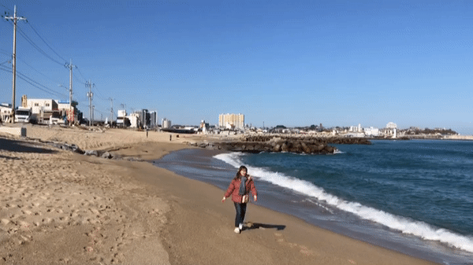
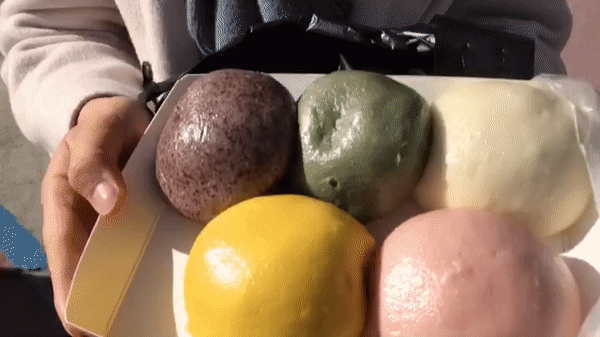
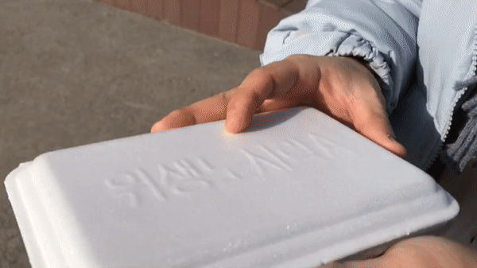
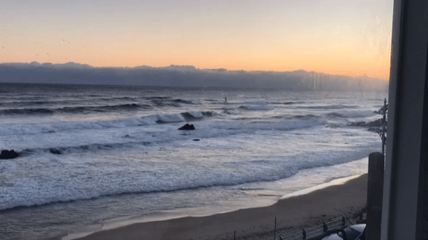

1/23~1/25 영은이의 짧은 여행일기
강릉을 가기위해 서울에서 기차를 타고 갔다. 기차밖으로 보이는 동해바다의 푸른빛깔이 너무나도 예뻤다.

푸른바다를 보니 여행온 기분도 나고 신나서 한바퀴 정도 돌아보았다.
바다앞에서 여러장의 사진도 찍고 배가 고파서 밥을 먹으러 갔다.
"얼라이브홈" 이라는 되게 유명한 인스타맛집 이였는데,
대기줄이 너무 길어서 조금 기다렸던것 빼고는 분위기도 맛도 너무 좋았던 곳이였다.
사실 밥만 먹은건 아니다. 여러가지 군것질도 많이 했다. 왜냐? 여행은 먹으러 가는 재미 이니깐~~ㅎㅎ
길가다가 호빵도 사먹고
만두도 사먹었다.ㅎㅎ
여기 만두중에 쭈꾸미 만두라고 하는 만두가 진짜 제일 맛있었다.(가운데 있는 만두!!)
먹는것도 좋고 푸른바다도 너무 좋았지만
제일 좋았던건 아침일찍 일어나서 보았던 일출 이었던것같다.
맛있는것도 너무 많고 바다도 너무 예뻐서 다음에 또 강릉여행 가고 싶다!ㅎㅎ
이상 강릉여행일기 끝!